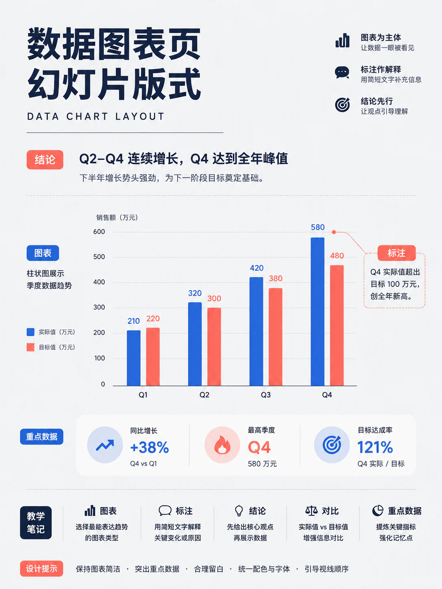

实验 A
盲测：B 是 A 的几倍？
同一组数值换四种视觉通道，看看你差了多少
拖动滑尺估一估「B 是 A 的多少倍」，再点按钮揭晓误差。
DATA CHART LAYOUT
2024 年度各季度销售额统计图表
展示四个季度实际销售额与目标额的汇总记录。
选最能表达趋势的图型
左右横拖画布推拉纵轴起点 · 上下拖动任意柱顶改写数据 · 直点红标或右侧标注框原地手术 · ←→ 微调 · Space 3秒扫视
保持图表简洁 · 突出重点数据 · 合理留白 · 统一配色与字体 · 引导视线顺序
THE THREE-LAYER READING HIERARCHY
原海报把整页拆成三个咬合的动作：「图表为主体：让数据一眼被看见」、「标注作解释：用简短文字补充信息」、「结论先行：让观点引导理解」。在会议室里，听众看一页图表通常只有三到五秒——如果让他们先看坐标轴、再对图例、再自己心算增幅，讲者早就翻到下一页了。
把结论直接写进最顶栏，图形编码只负责让听众「一眼验证这句话是真的」，紧贴峰值的珊瑚虚线标注补上关键差额或原因，阅读顺序就从「解谜」变成了「印证」。点击下面的三层步进开关，逐层看画面如何把十几秒的读表压缩成三秒直读。
原海报底部第一张重点数据卡写着「同比增长 +38%（Q4 vs Q1）」。我们把海报里的柱顶数字代入一算：Q4 为 580 万元、Q3 为 420 万元、Q1 为 210 万元——(580 − 420) ÷ 420 = +38.1%，这个 +38% 其实是 Q4 对比 Q3 的环比增长；而 Q4 对比 Q1 实际是 +176.2%，且「同比」必须和去年同期 Q4 比较。做数据图表页时，版式再干净，数字口径也一定要先核对一遍。
GRAPHICAL PERCEPTION & DATA-INK RATIO
为什么原海报选了二维平面分组柱状图，而不是饼图、气泡或炫酷 3D 柱？1984 年统计学家 William S. Cleveland 与 Robert McGill 在《美国统计学会杂志》上通过心理物理实验发现：人眼读图最准的通道是「同一刻度上的位置」（柱状图、点图），而扇区角度、圆面积和色阶明度的误差会成倍放大。下面亲手测一次。
同一组数值换四种视觉通道，看看你差了多少
拖动滑尺估一估「B 是 A 的多少倍」，再点按钮揭晓误差。
逐项勾选擦掉「图表垃圾」，看数据怎样浮出纸面
已剥离 0/5 项噪声
FIVE BOARDROOM CHART FAILURES
选一个常见翻车案例，左右拖动暗室里的分屏帘幕：左侧是实际汇报里反复出现的失真或失焦版，右侧是只改掉关键失误后的清爽修复版。
ORIGINS & EMPIRICAL LINEAGE
今天幻灯片里习以为常的「结论 + 柱状图 + 峰值标注」，背后是两百四十余年统计图形学、认知心理学与咨询汇报方法的汇流。点选五个经核实的里程碑，切换对应原理图版。
WHEN NOT TO USE DATA CHARTS
数据图表页擅长同时回答「趋势怎么走」与「对比差多少」，但它绝不是演示稿的万能模板。选一个真实汇报需求，测试是否该把这一页让给同一小类的其他版式。
别画四根柱子稀释记忆，交给 344 大数字页幻灯片版式。
情绪和洞察不在坐标轴上，改用 345 引语页幻灯片版式。
里程碑演进是主角时，改用 346 时间线页幻灯片版式。
步骤关系别硬塞柱状图，改用 347 流程页幻灯片版式。
无连续定量序列时，改用 348 矩阵页幻灯片版式。
图表会立刻拉回理性计算模式，改用 350 全图页幻灯片版式。
SINGLE-VARIABLE DIAGNOSTIC CHECK
ORIGINAL POSTER & KEYWORDS

「结论 Q2–Q4 连续增长，Q4 达到全年峰值 下半年增长势头强劲，为下一阶段目标奠定基础。」
保持图表简洁 · 突出重点数据 · 合理留白 · 统一配色与字体 · 引导视线顺序